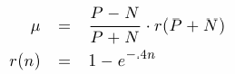

φ(w), is a function that maps any word w to a value in
[-1,+1]. Each word is also modeled through a normal distribution Ν(μ, σ), in which μ represents
the most common use of this word (positive/negative) and σ represents our uncertainty for this use. The most
straightforward definition of φ(w) is thus φ(w) = μ, but alternatives are certaily possible.
With regard to the previous examples, we wish our algorithms to infer that φ(decline) = -0.8, that φ(increase) = +0.8
and so on. The values, are of course arbitrary.
In general, there are two approaches to this problem. First, there is an ad hoc way of measuring some features of the word.
For example, taking sample sentences it appears in and so on. Second, a more systematic way would be to exploit the connections among word,
that become available through a dictionary (e.g. Wordnet). In this case, denoting with S(w) the set of words
that are connected semantically with w, a PageRank-like definition would be like φ(w) = α *Σ φ(y), for all y in S(w).
We will explore both options, in addition to our hybrid approach that combines both in the next section. φ(w) values
to derive the meaning of the sentence. It is then straightforward to generalize to complete pages.
To this end, we want to tweak PageRank to capture the meaning (up or down) of words. We give the theory of our initial approach, then describe two "tweaks/heuristics" we used to improve on our initial results.
First, assume we have some set of words W. We model the meaning of each word with a normal distribution, where the mean represents its most frequent use on the positive-negative connotation axis. The variance represents our uncertainty about the word's meaning. For example, we would give the word "the" a distribution with mean 0 and variance close to 0. This represents the fact that we are fairly sure about the word "the" being a neutral word.
Given n data points (real numbers) Xw for word w, we denote Φ(Xw) as the procedure that returns the parameters that maximize the likelihood of the data for the normal distribution corresponding to word w. That is, Φ(Xw) returns a pair of values, first the mean and second the variance: both likelihood maximizing values can be directly analytically computed from the data.
We let f(i)(w) the distribution of word w at step i and θw(i) the normal parameters of w. Also Sw stands for the set of words that are synonyms of w. Let γ be some fixed learning rate. (In our runs it is set to .5) We iterate the following algorithm for 30 iterations and return the resulting values. Note that in our trials, μw is set to .9 or -.9. We used n = 50. The algorithm pseudocode is as below:
MFT=(H,R,F,T) where: H is a finite set of objects H={a,b,c…} R H×H is a binary relation on H, F(.) is a function H x R T is a tree such that every edge is a relation in R H. Whenever an object a is being placed on a node, then every child node is being filled
with some object x (different for every child node) if and only if r(a,x) holds, where r is the edge between the child
and parent node. Following this process and given an object w is in H we get a tree T(w) by placing the w
in the root node of T. Then we can define a function
φ(MFT,w)= E{ φ(x) | x leaf node of T(w)}
H is the set of words in it. The function φ(.) is the meaning function as approximated in the previous section.
The tree T is a tree which has been predefined to closely reflect the sentence understanding process.
A generative approach to this definition along with some potential advantages is also possible.
Finally, the set of relations is given by a syntactic dependency graph obtained by such a parser on the input sentence.
For this purpose we are using the Stanford lexical parser (Stanford, 2010). The Stanford parser defines 55 different types of relations between words but
normally a small subset appears after parsing each sentence.
The graph for the sentence above looks like the one in the following figure.
A syntactic dependency graph is a graph structure that conveys the grammatical relationships in a sentence.
Consider a simple example:
nsubj(makes, Bell) which denotes that “Bell” is the nominal subject of the verb “makes”.
For our purposes we glued together the Stanford java module to our Perl program and used the output of the parser as
the set of binary relations R of the MFT. For an illustrative example consider the following MFT on the sentence:
H={the,dollar,moved,upwards,last,Friday}.
The function F(.) is the same meaning function φ(.) as in the previous section. The relation is given by the Stanford parser as:
T for the MFT:
φ(MFT,dollar).
To do that, the object “dollar” is placed on the root node.
Then the left child of the root node remains empty as there is no relation of the form amod(x,dollar).
However, the right node is being filled with the object “moved”.
Subsequently, the left child remains empty, while the right child is filled with the object “upwards”.
The final tree will look like this:
φ(MFT,dollar)=M(upwards)=+0.79,
thus capturing correctly the meaning of the example sentence.
First, we used parsing code in Python to obtain for each word in our list a list of synonyms from Princeton's WordNet. After formatting the data a bit, this list of words and synonyms describes a graph over our set of words W. We use the first mapper and reducer to construct the graph accordingly, initializing most of the word-normal-parameters to the appropriate values. To start off, we denoted 15 "good" words and 15 "bad" words as seeds (we ran pageRank over the graph to see which were the "important" words we should use to best propagate our values) and proceeded to use .9 or -.9 as the means these "seeds." Note that the parameters of these seeds were immutable during the course of pageRank. This was accomplished by including special symbols in the seed-words. Finally, note that when word b was in word a's list of synonyms, we created an edge that went from b to a, not the other way around.
Afterward, we simply ran a modified version of pageRank on our constructed graph. Instead of pageRank, however, we would send lists of samples taken from normals distributed with the parameters of the source word.
For example, if we had edges from words a, b, c to word d, then we would have corresponding lists [x1,a, x2,a, ...], [x1,b, x2,b, ...] and [x1,c, x2,c, ...]. We would take the average of x1,a, x1,b, x1,c to represent the first element of Xd, and so on. After computing the likelihood maximizing parameters, we would update word w's parameters accordingly.
After 30 iterations, we returned the complete list of (mean, variances) for all the words.
Seeds
Regarding our initial seeds, they are:
|
Bad Seeds |
Good Seeds |
|
collapse |
assist |
|
overshadow |
advantage |
|
threaten |
promote |
|
devalue |
benefit |
|
decline |
surge |
|
penalize |
inspire |
|
undermine |
restore |
|
blame |
avert |
|
worsen |
rebound |
|
complicate |
prosper |
|
criticise |
recover |
|
deteriorate |
surpass |
|
wilt |
unite |
|
droop |
befriend |
|
ruin |
empower |
Heuristic I: Front-Back Linking
As one might notice from looking at the data set corresponding to the original algorithm, most of the entries are unchanged, and are exactly as they were initialized. This implies that there are a lot of words that did not receive any lists of samples from other words. This is because our method for constructing the graph detailed in Summary 1 constructs a graph that is insufficiently connected. To fix this problem, we construct our graph with a few more edges: when a is listed as a synonym of b, we create the edge a → b. (As before)
Now in addition if c lists b as a synonym, we create the edge c → b. To avoid changing our Page Rank algorithm drastically, we accomplished this by reformatting the synonym list obtained from WordNet appropriately. (For word b we would list all the synonyms of b returned by WordNet and the words that listed b as a synonym)As can be demonstrated by our results, we see that this is a step in the right direction. However, we note that our initial seeds still seem insufficient; we need more "meaning" to be in the graph before we run pageRank.
Heuristic II: Informative Priors
Here we scanned the internet for lists of "positive" words and lists of "negative" words. We constructed two such lists, both exceeding 100 words. Now for each word w in W we used WordNet to look up the definition of that word. Parsing the definition into a list of words, we checked each word in the definition, attempting to find a match in either the list of positive words or the list of negative words. If we could find no matches for any word in the definition, then we simply initialized the word in our algorithm as initially stated.
However, if we could find words shared by the positive/negative lists and the definition, then we gave an "informative prior" to w. We let D be the set of words in the definition, let M be the 100+ set of positive words and K be the 100+ set of negative words. Then we define:
Given
some confidence function r(n),
we let the prior on word w
be μ such that:

For
w
with an informative prior, set the variance to be equal to .05, to
represent having more "certainty" about the word. This
approach in conjunction with the front-back linking generates the
best results.
RECV query
urlList = GoogleNewsSearch(query)
MPI_Bcast(urlList) to WORKERS
UNTIL all downloaded {
results.add(MPI_Recv(workerId))
updateServer(results)
}
RECV urlList
indices = FilterIndividualLinks(urlList)
UNTIL all downloaded {
result = parseURL(url)
MPI_Send(master, result)
}
FilterIndividualLinks is responsible with taking the links that are
to be downloaded by the particular worker. This is achieved through the rank of the worker and the total
size of the MPI worker set. Let us now discuss briefly about the Map-Reduce performance for learning meaning functions.
We have placed our results in a spreadsheet and of course, the fixed seeds have been removed. For the purposes of the graph, we have removed the nodes with no incoming edges, i.e. the nodes that receive the initial value of 0 as their score. We do this to better clarify the data. We give the graph of the number of words that end up with a mean of above .4 and the number of words that end up with a mean of below -.4.
[-1,+1].